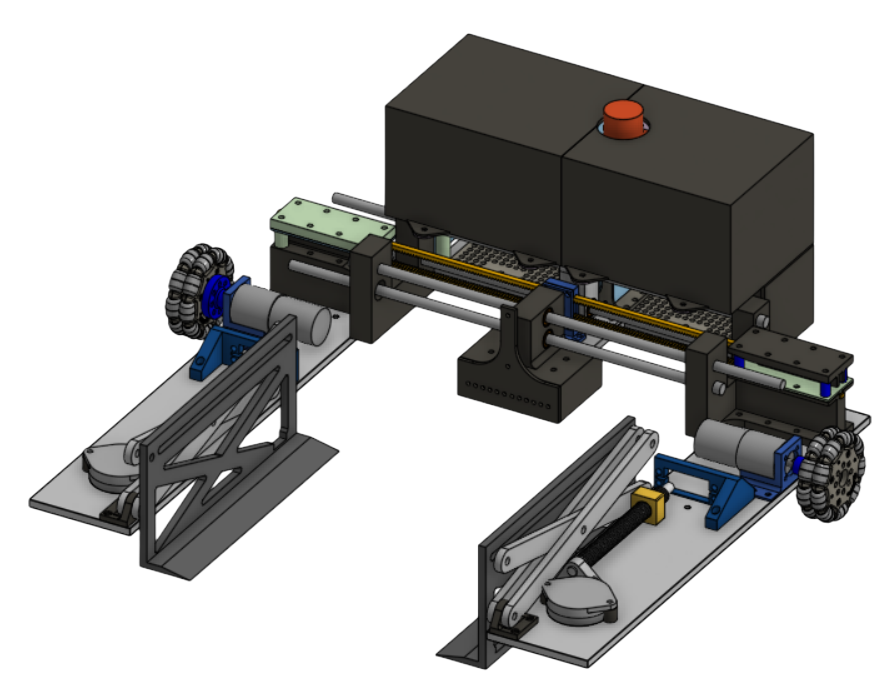
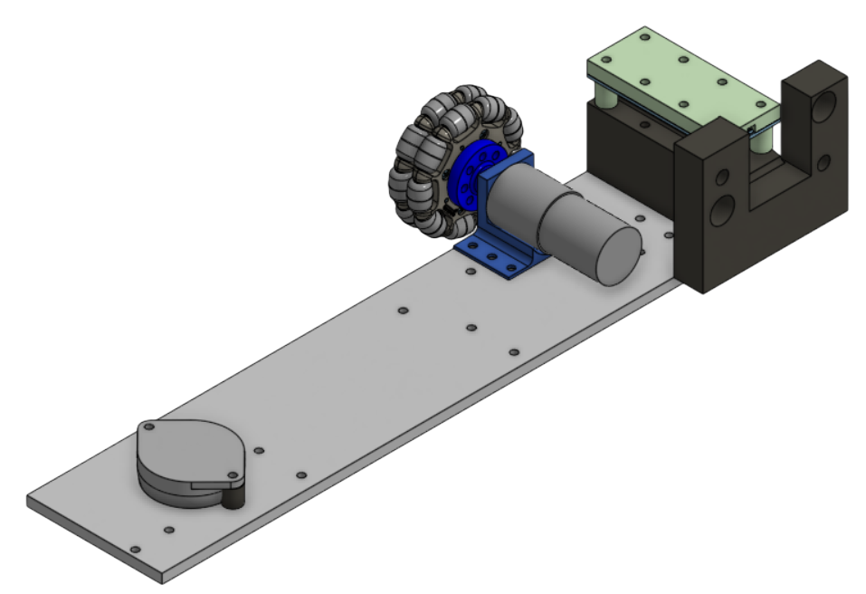
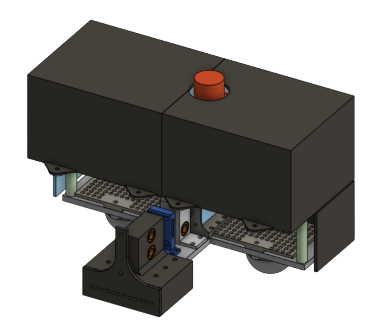
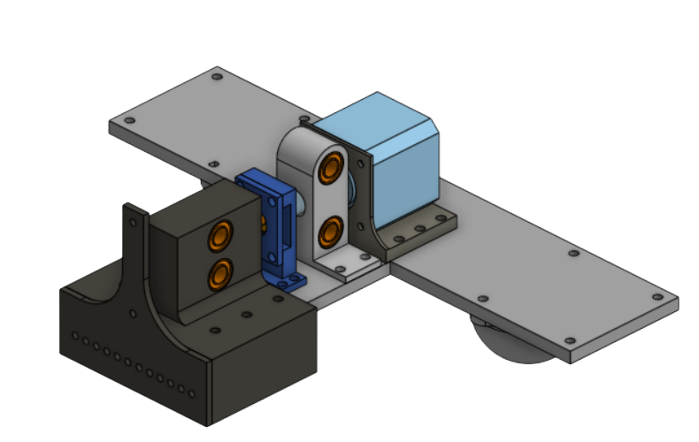
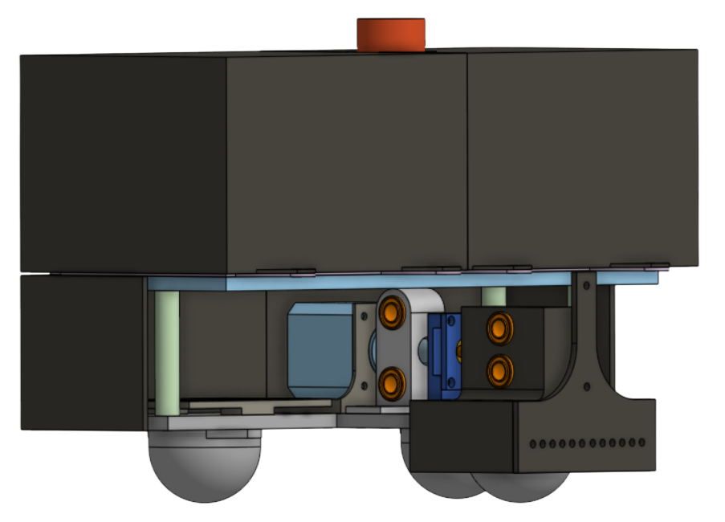
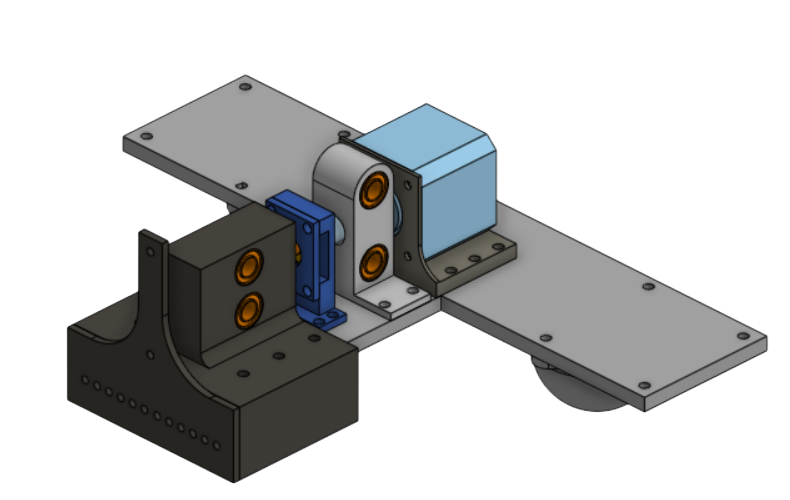
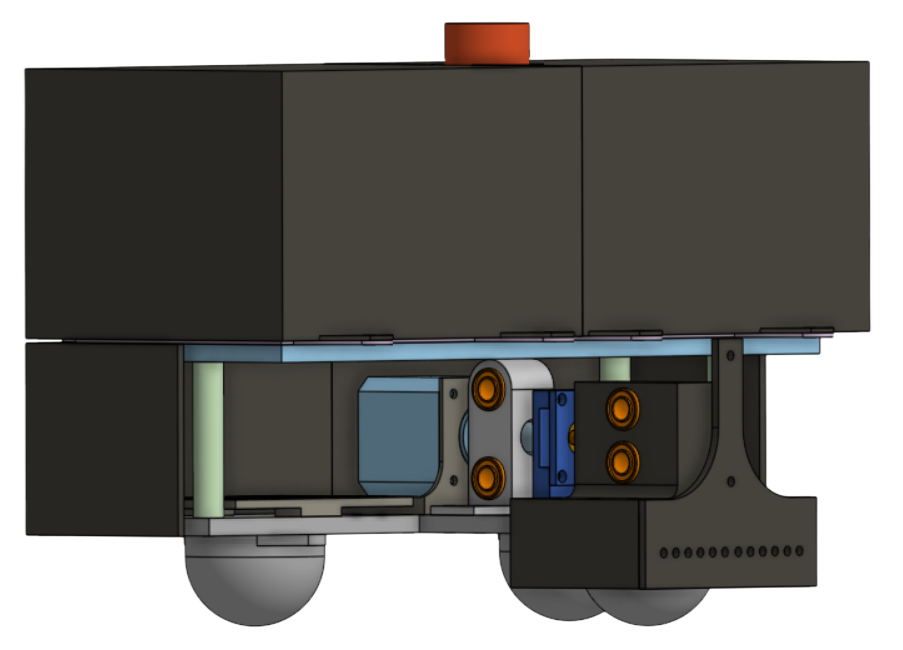
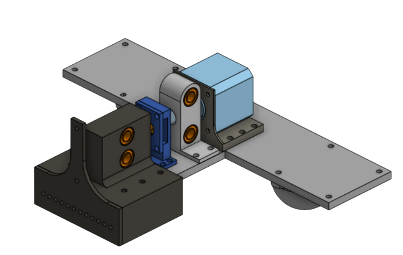
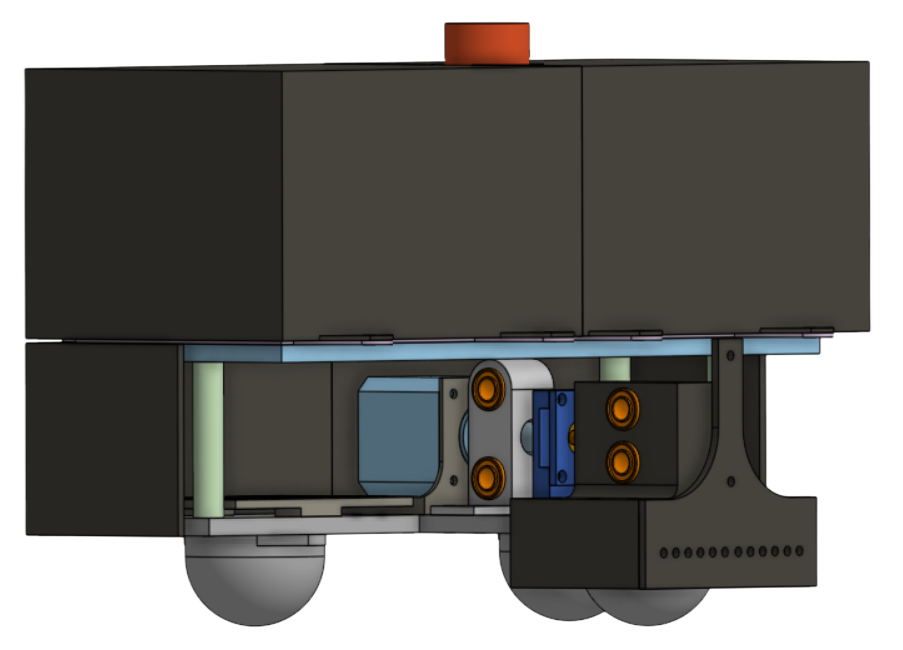

Mechanical Design
This is the CAD of BoxBot. We decided that we wanted the drivebase to be as low to the ground as possible, squeeze the box with with a rack and pinion system, and lift up the box with a scissor lift mechanism. This mechanical system can lift the box 6 inches above ground and is able to carry at least 20 pounds.

Drive Base
The drivebase carries the scissor lift, motors, and linear rails.
- Omni-Directional Movement: Uses four Omni Wheels for linear movement, as well as easy horizontal alignment.
- Stability: Features two Roller Ball Transfer Bearings per drive base in both the front and the back. This helps for load support and stability.
- Material: Built from 1/4" thick 6061 aluminum for more stability and less prone to bending.
- Linear Rails/Rack Supports: Supporting the left drive base and aligning it with the right drive base.



Center Plate
The bridge for structural integrity and electronics.
- Weight Distribution: Centrally mounts all of the electronics, especially the 24V 4Ah battery, for a balanced center of gravity.
- Electronics Protection: Enclosed Casing that hides the electrical system, such as the Rasberry Pi and the E-Stop.
- Pinion Holder: Features a pinion holder that is attached to the stepper motor.
- Camera Mount: A centralized camera mount that is low to the ground for vision.
- Stability: 3 different caster wheels to support the weight of the electronic components, as well as linear rails sandwiching the pinion holder to increase the stability of the left and right drivebases.

 





Scissor Lift
Scissor lift mechanism that lifts the Box above the camera.
- Servo Driven: Driven by 25kg high-torque digital continuous servos.
- Precision Travel: Lead Screws and a driven lead nut that moves the scissor arm up.
- Lift Plate: Attached lift plate to get under the cardboard box and have the power of the servo lift the box, not the squeeze motor.
- Travel height: Maximum height travel of 6 inches.
- Weight Restrictions: Can lift a minimum of 20 pounds.